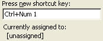

Free
computer Tutorials
|
Free
computer Tutorials
|
|
 home home |
|
||||
Assign your Word Macro to a Key on your KeyboardWe're going to create a new Macro for this lesson. The Macro will insert a textbox onto the page for us. It will do this when we press certain keys on the keyboard. To create our new macros and then assign it to the keyboard, do the following. (Actually, you do it the other way round: assign the key first, then record the macro!)
When you click on the Keyboard icon, a new dialogue box appears. This one: The part we're interested in is the text box underneath Press new shortcut key, right at the bottom.
As you can see, it says Currently assigned to: MoveText. What it's telling you is that they key F2 already has a shortcut assigned to it. So we can't use F2 for our macro.
 As you can see, it now says Currently assigned to: Unassigned. (If yours does not say Unassigned, then try a different number. ) That means no other shortcut is using these key combinations. So we can go ahead and use them for our macros. To use them for your macro, click the "Assign" button:
To record your new macro, do the following:
Your macro is now recorded. Time to test it out to see
if it works. To test out your new macro, do the following.
If you didn't get a text box on the page, then something went wrong. So no choice but to try again! You can record over the InsertTextBox macros just like you did before, if a mistake was made. So there you have it: a handy shortcut every time you need a text box. All you have to do is press Ctrl and then the number 1 key. A text box will pop up on the page. It will pop up in exactly the same position each time you use the shortcut. But text boxes are easy to drag around and position elsewhere.
We'll now see how to assign a macro to the toolbar. Learn how to assign a Macro to the Word Toolbar --> |
|||||
|